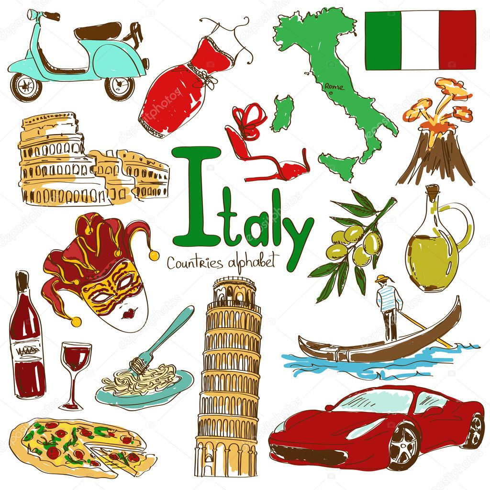

Italia es conocida mundialmente por su rica herencia cultural. A lo largo de los siglos, el pais ha sido una fuente constante de innovacion artistica, literaria y musical. El Renacimiento, que surgio en Italia, transformo el arte y la cultura en Europa y dio origen a algunos de los artistas mas influyentes de la historia, como Leonardo da Vinci, Miguel Angel y Rafael. La arquitectura italiana tambien ha dejado una huella importante, con estructuras iconicas como el Coliseo, la Catedral de Florencia y los palacios venecianos.
En la musica, Italia es la cuna de la opera, y compositores como Verdi y Puccini son celebrados en todo el mundo. La tradicion musical italiana se mantiene viva en la actualidad, tanto en la musica clasica como en la musica popular. En cuanto a la literatura, escritores como Dante, Petrarca y Boccaccio son figuras clave de la cultura literaria italiana, cuyos trabajos siguen siendo estudiados y admirados hoy en dia.
La moda y el diseño tambien son aspectos fundamentales de la cultura italiana contemporanea. Ciudades como Milan son epicentros globales de la moda, y diseñadores italianos como Gucci, Prada y Versace han redefinido el estilo y la elegancia en todo el mundo. La influencia de Italia en la cultura pop es innegable, desde el cine italiano hasta la gastronomia, que ha conquistado corazones y estomagos en todo el planeta.
La vida cotidiana en Italia gira en torno a tradiciones familiares y comunitarias. Las festividades religiosas, los mercados locales y las celebraciones regionales forman una parte integral de la vida cultural. A pesar de ser un pais moderno, Italia mantiene un fuerte sentido de identidad regional, con dialectos, costumbres y cocinas que varian de una region a otra, lo que enriquece aun mas su diversidad cultural.